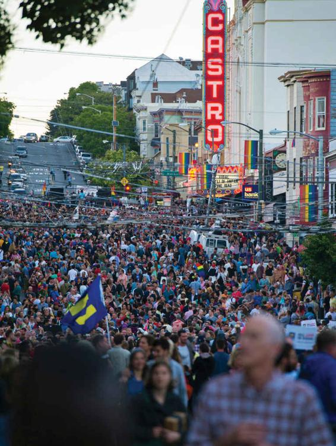

Whereas the earlier Chicago School of sociology emphasized that the distribution of people in cities occurs naturally, scholars such as Drake and Cayton (1945) showed that there was nothing “natural” about the formation of ghettos, and more recent theories of the city have stressed that urbanism has to be analyzed in relation to larger patterns of political and economic change. This focus on the political economy of cities, and increasingly in a global context, represented a new and critical direction for urban sociology.
Harvey: The Restructuring of Space
Urbanism is one aspect of the created environment brought about by the spread of industrial capitalism, according to David Harvey (1973, 1982, 1985, 2009). In traditional societies, city and countryside were clearly differentiated. In the modern world, industry blurs the division between city and countryside. Agriculture becomes mechanized and is run according to considerations of price and profit, just like industrial work, and this process lessens the differences in modes of social life between urban and rural people.
Harvey points out that in modern urbanism, space is continually restructured. The process is determined by decisions of large firms (where they choose to place their home offices, research and development centers, and factories); the controls that governments operate over both land and industrial production; and the activities of private investors who buy and sell houses and land. Business firms, for example, are constantly weighing the relative advantages of new locations against existing ones. As production becomes cheaper in one area than another, or as the firm moves from one product to another, offices and factories will be closed down in one place and opened up elsewhere. Once the offices or factories have been built and the area redeveloped, investors look for the potential for further speculative building elsewhere. What is profitable in one period will not necessarily be so in another, when the financial climate changes.
The activities of private home buyers are strongly influenced by how far, and where, business interests buy up land, and by rates of loans and taxes fixed by local and central government. After World War II, for instance, there was vast expansion of suburban development outside major U.S. cities. This expansion was due partly to ethnic discrimination and the tendency of Whites to move away from inner-city areas. However, it was made possible, Harvey argues, only because of government tax breaks to home buyers and construction firms and because financial organizations set up special credit arrangements. These provided the basis for the building and buying of new homes on the peripheries of cities and, at the same time, promoted demand for industrial products such as the automobile.
Castells: Urbanism and Social Movements
Like Harvey, Manuel Castells (1977, 1983) argues that cities are almost wholly artificial environments, constructed by people, rather than the natural forces emphasized by the Chicago School. Both also stress that the spatial form of a society is closely linked to the larger political economy. Castells, however, also focuses on the collective consumption that cities make possible, such as the buying and selling of property. Homes, schools, transport services, and leisure amenities are ways in which people consume the products of modern industry. Large corporations, banks, and insurance companies, which provide capital for building projects, have a great deal of power over these processes; government agencies also directly affect many aspects of city life, by building roads and public housing, planning parks, and through tax policies and development subsidies. The physical shape of cities is thus a product of both market forces and the power of government.
But the nature of the created environment is not just the result of the activities of wealthy and powerful people. Castells stresses the importance of the struggles of underprivileged groups to alter their living conditions. Urban problems stimulate a range of social movements concerned with improving housing conditions, protesting against air pollution, defending parks, and combating building development that changes the nature of an area. For example, Castells studied the 1970s gay movement in San Francisco, which succeeded in restructuring neighborhoods around its own cultural values—allowing many gay organizations, clubs, and bars to flourish—and gained influence over local politics.
The Castro district in San Francisco is not only open but celebratory about its thriving gay and lesbian population.
John Logan and Harvey Molotch (1987) have suggested an approach that directly connects the perspectives of authors such as Harvey and Castells with some features of the ecological standpoint. They agree with Harvey and Castells that broad features of economic development, stretching nationally and internationally, affect urban life in a quite direct way. But these wide-ranging economic factors, they argue, are focused through local organizations, including neighborhood businesses, banks, and government agencies, together with the activities of individual home buyers. Places (land and buildings) are bought and sold, according to Logan and Molotch, just like other goods in modern societies, but the markets that structure city environments are influenced by how different groups of people want to use the property they buy and sell. Many tensions and conflicts arise as a result of this process—and these are the key factors structuring city neighborhoods. For instance, an apartment house is seen as a home by its residents but as a source of income by its landlord. Businesses are most interested in buying and selling property in an area to obtain the best production sites or to make profits in land speculation. Their interests and concerns are quite different from those of residents, for whom the neighborhood is a place to live.